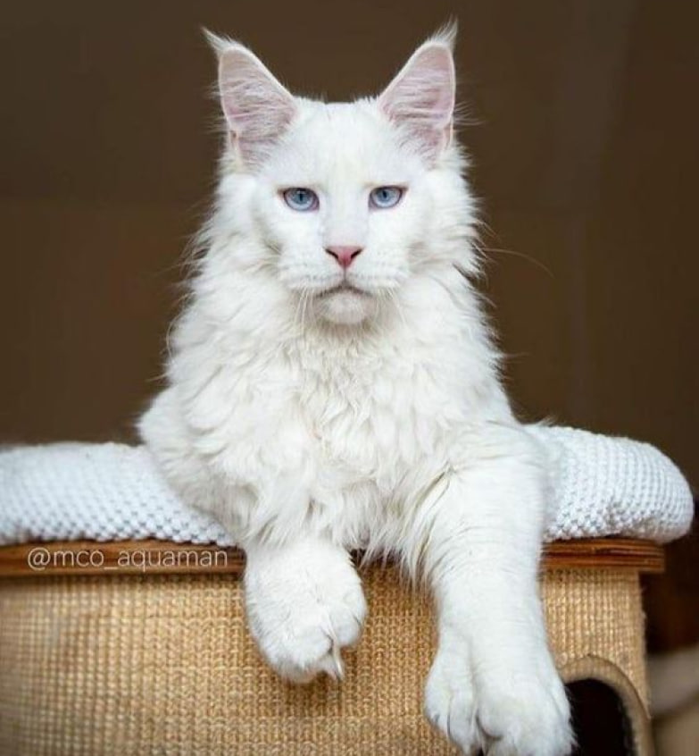
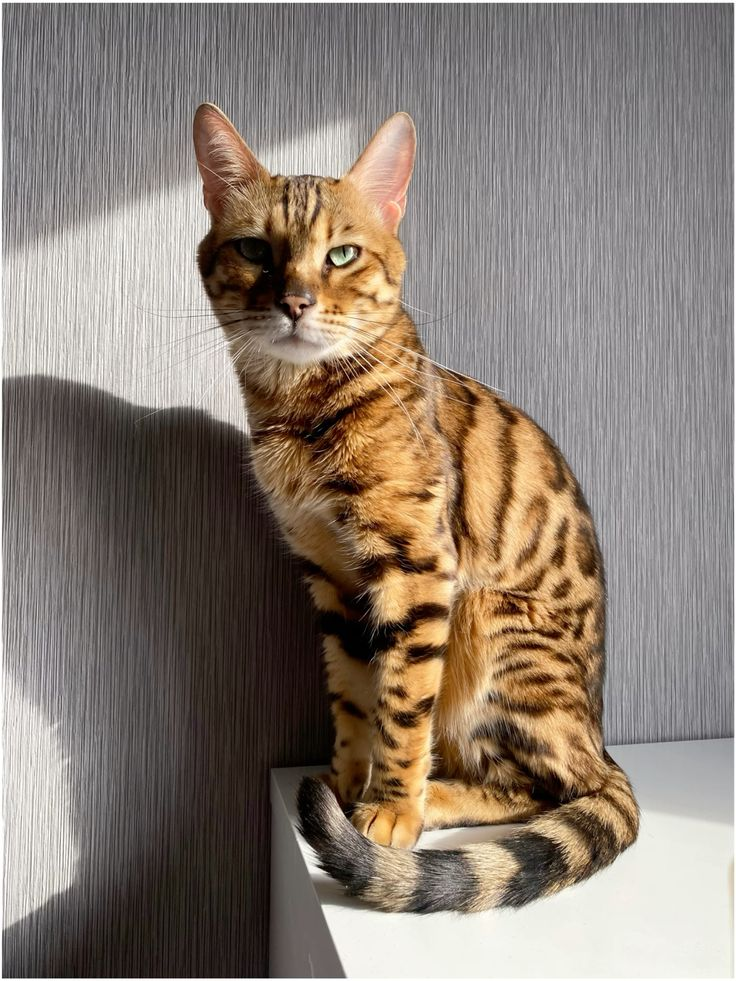
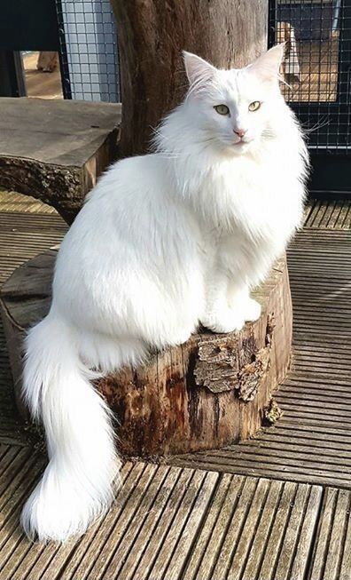

Домашні коти - це надзвичайно цікаві та привітні тварини, які вже століттями живуть поруч з людьми. Вони вражають своєю грацією, незалежністю та теплотою.
Психологія поведінки котів
Територіальність: коти - це соціальні тварини, які можуть встановлювати ієрархію у вашому будинку. Вони можуть показати дружбу або конкуренцію з іншими котами та навіть з вами. Коти мають виражену потребу в території, яку вони вважають своєю. Важливо надати коту простір, де він може відчувати себе безпечно та захищено.
Соціальна взаємодія: деякі коти більш схильні до соціальної взаємодії з людьми та іншими тваринами, тоді як інші можуть бути більш незалежними. Коти спілкуються з вами за допомогою звуків, міміки та рухів тіла. Розуміння потреб та характеру вашого кота допоможе підтримувати гармонійні стосунки.
Звички та потреби: коти мають свої унікальні звички та потреби, такі як гостра потреба в чистоті, потреба в грі та розвагах, а також потреба в місці для спокійного відпочинку. Важливо забезпечити їм середовище, що задовольняє ці потреби.
Стрес та адаптація: коти можуть реагувати на стрес так само, як і люди. Важливо створити для них спокійне та стабільне середовище.
Звуки, рухи та міміка тіла котів
Звуки: коти використовують різноманітні звуки, щоб спілкуватися з людьми та іншими тваринами. Наприклад, муркотіння може вказувати на задоволення або комфорт, а голосні м'яукання можуть означати бажання уваги або їжі.
Міміка: хоча обличчя кота може здаватися виразним, їхні вирази також можуть передавати певні почуття. Наприклад, розширені з pupils можуть свідчити про зацікавленість або побоювання.
Рухи тіла: поведінка та рухи тіла кота можуть допомогти вам зрозуміти їхні почуття. Наприклад, вони можуть витягувати спину та масажувати землю під час вигинання, що може свідчити про залюбки.
Догляд за котами
Основні принципи харчування котів
Білок
Білок є основним компонентом раціону котів, оскільки вони є облігатними хижаками. Він необхідний для підтримки м'язової маси, здоров'я шкіри та шерсті, а також для вироблення енергії. Найкращі джерела білка включають яловичину, курку, рибу, яйця, індичку та комерційні котячі корми високої якості.
Жири
Жири забезпечують енергію, сприяють здоров'ю шкіри і шерсті, а також є джерелом необхідних жирних кислот. Найкращі джерела жирів - це тваринні жири, риб'ячий жир, курячий жир і лляна олія.
Вуглеводи
Хоча котам не потрібні великі кількості вуглеводів, вони можуть бути джерелом енергії та забезпечувати клітковину для здоров'я кишечника. Корисні доповнення раціону включають крупи, овочі та невелику кількість фруктів.
Вітаміни і мінерали
Вітаміни і мінерали необхідні для підтримки обміну речовин, імунної системи та загального здоров'я кота. Забезпечте збалансоване харчування за допомогою комерційних кормів або спеціальних добавок.
Типи Кормів для Котів
Сухий Корм
Сухий корм зручний у використанні, має тривалий термін зберігання і допомагає підтримувати здоров'я зубів. Проте він містить менше вологи, що може призвести до зневоднення, якщо кіт не п'є достатньо води.
Вологий Корм
Вологий корм має високий вміст вологи, сприяє гідратації і зазвичай є більш апетитним для котів. Проте, він має коротший термін зберігання після відкриття і вищу вартість.
Сирий Корм (BARF-дієта)
Сирий корм, або BARF-дієта, близький до природного раціону котів і має високу біодоступність поживних речовин. Проте він потребує ретельного планування, має ризик бактеріальних інфекцій і є дорожчим та складнішим у приготуванні.
Харчові потреби у різних вікових групах
Кошенята (до 1 року)
Кошенята потребують високого вмісту білка і жиру для росту, а також спеціальних добавок для розвитку кісток і зубів. Рекомендовано спеціальні корми для кошенят та часті прийоми їжі, 3-4 рази на день.
Дорослі Коти (1-7 років)
Дорослі коти потребують збалансованого харчування для підтримки здоров'я і енергії. Їх слід годувати високоякісними комерційними кормами для дорослих котів двічі на день, підтримуючи здорову вагу.
Старші Коти (від 7 років)
Старші коти потребують зниження калорійності для запобігання ожирінню, а також підтримки здоров'я суглобів і нирок. Для них підходять спеціальні корми для старших котів, добавки для суглобів та частіші огляди у ветеринара.
Рекомендації щодо годування
Регулярність
Дотримуйтесь регулярного графіку годування. Для дорослих котів оптимально годувати їх двічі на день.
Вода
Забезпечте постійний доступ до свіжої і чистої води. Вологий корм може частково компенсувати потребу у воді.
Контроль ваги
Регулярно перевіряйте вагу кота, щоб уникнути ожиріння або недостатньої ваги. При потребі коригуйте раціон за рекомендацією ветеринара.
Перехід на новий корм
При зміні типу або марки корму робіть це поступово, протягом 7-10 днів, щоб уникнути проблем з травленням.
Уникання людської їжі
Не годуйте кота їжею зі столу. Деякі продукти можуть бути токсичними для котів, такі як шоколад, цибуля, часник і виноград.
Спеціальні потреби
У разі наявності у кота хронічних захворювань або алергій, дотримуйтесь спеціальної дієти за рекомендацією ветеринара.
Догляд за шерстю
Розчісування:
Короткошерстих котів слід розчісувати 1-2 рази на тиждень, довгошерстих – щодня. Використовуйте відповідні інструменти, такі як гребінці, щітки та фурмінатори. Регулярне розчісування допомагає видалити відмерлі волоски, запобігає утворенню ковтунів та сприяє розподілу природних олій по шерсті.
Купання:
Котів зазвичай купають рідко, приблизно 1-2 рази на рік або при необхідності (якщо кіт дуже забруднився або має специфічний запах). Використовуйте спеціальні шампуні для котів, уникайте потрапляння води в вуха та очі. Після купання ретельно висушіть кота.
Догляд за вухами та очима
Огляд і чистка вух:
оглядайте вуха кота раз на тиждень. Використовуйте спеціальні вушні чистки або вологі серветки для тварин. Обережно чистіть тільки зовнішню частину вуха, уникаючи глибокого проникнення.
Чистка очей:
Перевіряйте очі кота щодня. Використовуйте вологі серветки або ватні диски, змочені у теплій воді, для видалення виділень і забруднень з куточків очей.Перевіряйте очі кота щодня. Використовуйте вологі серветки або ватні диски, змочені у теплій воді, для видалення виділень і забруднень з куточків очей.
Догляд за зубами та кігтями
Чистка зубів:
Рекомендується чистити зуби коту 2-3 рази на тиждень. Використовуйте спеціальні зубні пасти та щітки для котів. Не використовуйте людську зубну пасту, оскільки вона може бути токсичною для котів.
Стрижка кігтів :
стрижіть кігті кожні 2-4 тижні. Використовуйте спеціальні когтерізи для котів. Будьте обережні, щоб не поранити живу частину кігтя (квік).
Когтеточки: Забезпечте кота когтеточками для природного сточування кігтів і захисту меблів.
Догляд за лапами та чистка лотка
Перевірка лап:
Регулярно перевіряйте лапи на наявність забруднень, ран або сторонніх предметів. Мийте лапи при необхідності та обережно видаляйте будь-які забруднення або сторонні предмети.
Чистка лотка:
Очищайте туалетний лоток щодня, змінюйте наповнювач повністю раз на тиждень. Використовуйте якісний наповнювач, який добре вбирає запахи та легко чиститься. Тримайте лоток у чистоті, щоб запобігти інфекціям.
Місце розташування:
Лоток має бути розташований у тихому і спокійному місці, подалі від місць прийому їжі
Профілактика паразитів та регулярні відвідування ветеринара
Блохи та кліщі:
Використовуйте профілактичні засоби від бліх та кліщів (шампуні, краплі, нашийники). Регулярно оглядайте кота на наявність паразитів, особливо після прогулянок на вулиці.
Гельмінти:
Регулярна дегельмінтизація згідно з рекомендаціями ветеринара, навіть якщо кіт не виходить на вулицю.
Огляди у ветеринара:
Щорічні огляди, а для старших котів (від 7 років) – раз на півроку. Вчасно вакцинуйте кота, проводьте профілактичні огляди та консультуйтесь щодо будь-яких змін у поведінці чи здоров'ї.
Забезпечення належної гігієни – це ключ до здоров'я та щастя вашого кота. Регулярний догляд та увага до гігієнічних процедур допоможуть запобігти багатьом захворюванням та проблемам зі здоров'ям.
Хвороби котів
Кишкові проблеми: Симптоми: Блювота, діарея, втрата апетиту. Рекомендації: Підтримуйте здоровий харчовий раціон, уникайте подразнюючої їжі, яка може спричиняти кишкові проблеми, і регулярно відвідуйте ветеринара для медичного контролю та лікування.
Захворювання сечостатевої системи: Симптоми: Переїдання, часте сечовиділення, кров у сечі. Рекомендації: Забезпечте доступ до достатньої кількості води, слідкуйте за чистотою лотка для котів, уникайте стресу та підтримуйте нормальну вагу.
Респіраторні захворювання: Симптоми: Кашель, нежить, чхання. Рекомендації: Уникайте контакту з іншими хворими котами, забезпечте чисте повітря та відповідну вентиляцію у приміщенні, та вчасно вакцинуйте вашого кота проти вірусних інфекцій.
Паразити: Симптоми: Зуд, втрата шерсті, подразнення шкіри. Рекомендації: Використовуйте препарати від блох та кліщів, регулярно проводьте обробку приміщення, де проживає ваш кіт, та слідкуйте за гігієною шерсті та шкіри.
Дентальні захворювання: Симптоми: Поганий запах з рота, зубний камінь, видалення зубів. Рекомендації: Регулярно чистіть зуби свого кота, користуйтеся спеціальними засобами для догляду за зубами, та регулярно проводьте огляди у ветеринара.
Завжди важливо вчасно реагувати на будь-які симптоми хвороби та звертатися до кваліфікованого ветеринара для діагностики та лікування. Регулярні медичні огляди та профілактичні заходи допоможуть зберегти вашого кота здоровим та щасливим.
Породи
Персидські коти
Персидські коти відомі своєю довгою пухнастою шерстю та спокійним характером. Для догляду за ними важливо щодня розчісувати шерсть, щоб уникнути ковтунів, та регулярно чистити очі та вуха.
Ця порода котів має лагідний і врівноважений темперамент. Вони є відмінними компаньйонами, люблять проводити час з людьми та грати з м'якими іграшками. Персидські коти також схильні до деяких генетичних захворювань, тому важливо стежити за їх здоров'ям та регулярно відвідувати ветеринара.
Мейн-куни
Мейн-куни - великі коти з густою шерстю та дружелюбним характером. Вони потребують достатньо місця для гри і розчісування кілька разів на тиждень.
Мейн-куни відомі своїм великим розміром та вражаючою зовнішністю. Вони дуже товариські і зазвичай добре ладнають з іншими тваринами та дітьми. Незважаючи на свій великий розмір, вони є досить активними і потребують фізичної активності.
Сіамські коти
Сіамські коти мають елегантну зовнішність та активний характер. Вони потребують багато іграшок для розваги та проводження часу з власником, оскільки люблять увагу.
Сіамські коти дуже соціальні і говірливі. Вони вимагають багато уваги і взаємодії з людьми. Їх енергійний характер робить їх ідеальними компаньйонами для активних людей.
Сфінкси коти
Сфінкси - безшерстні коти з теплою шкірою та енергійним характером. Вони потребують забезпечення теплом, особливо в холодну пору року, та регулярного миття для збереження чистоти шкіри.
Сфінкси відомі своєю прив'язаністю до людей і люблять проводити час зі своїми власниками. Вони потребують особливого догляду через відсутність шерсті, але їх унікальний вигляд та тепла шкіра роблять їх улюбленцями багатьох.
Британські короткошерсті коти
Британські короткошерсті коти - спокійні та лагідні тварини з короткою густою шерстю. Для підтримання активності їм потрібні іграшки, а розчісувати їх варто раз на тиждень.
Ці коти відомі своєю дружелюбністю і доброзичливим характером. Вони швидко адаптуються до нових умов і добре ладнають з дітьми та іншими тваринами. Британські короткошерсті коти часто вважаються відмінними сімейними тваринами, які люблять бути в центрі уваги.
Абіссінські коти
Абіссінські коти - енергійні та граційні тварини з короткою шерстю та дикою зовнішністю. Вони потребують багато активних ігор та стимуляції, а догляд за шерстю мінімальний - достатньо розчісувати раз на тиждень.
Абіссінські коти відомі своєю любов'ю до дослідження і активного способу життя. Вони добре ладнають з іншими тваринами і дітьми, а також є відмінними компаньйонами для активних власників.
Бенгальські коти
Бенгальські коти - граційні та енергійні тварини з рельєфними маркуваннями і короткою шерстю. Вони потребують багато фізичної та розумової стимуляції, оскільки мають велику кількість енергії.
Бенгальські коти відомі своєю любов'ю до води і гри, і є чудовими партнерами для активного способу життя. Вони також можуть бути дуже прив'язані до своїх власників і добре ладнають з іншими домашніми тваринами.
Регдольські коти
Регдольські коти - великі, м'язисті коти з довгою, пухнастою шерстю та пишними хвостами, які нагадують тюльпан. Ці коти мають ніжний і лагідний характер і вважаються однією з найдружелюбніших порід котів. Вони добре ладнають з дітьми і іншими домашніми тваринами, і можуть стати прекрасними сімейними тваринами.
Регдоли відомі своєю ласкою та прив'язаністю до своїх власників, і завжди раді проводити час разом з ними.
Норвезькі лісові коти:
Норвезький лісовий кіт - великі, м'язисті тварини з вражаючою довгою та густою шерстю, яка використовувалася для захисту від суворого скандинавського клімату. Ці коти мають виразні обличчя, з великими виразними очима, які надають їм дикий, але привабливий вигляд
Норвезькі лісові коти відомі своєю незалежністю та самостійністю, але в той же час вони можуть бути дуже прив'язані до своїх власників. Вони люблять досліджувати оточуючий світ і можуть бути дуже активними.